灸艾
灸艾残冬｜节气｜ 小寒 ｜时间｜ 一月五日至一月二十日
今年小寒需特别注意的健康问题：皮肤问题、胃痛、咳嗽、心脏问题
原料：赤小豆、糯米、黍米、油、盐、紫苏子。
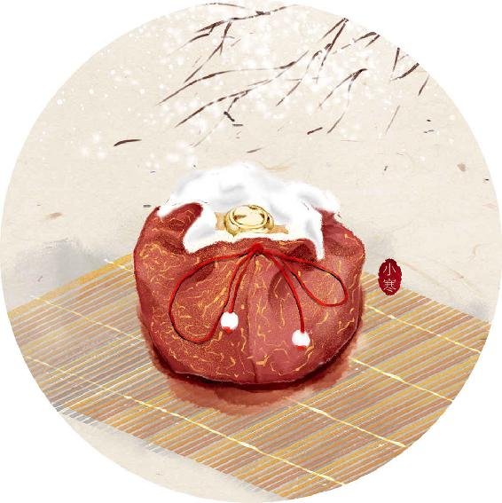
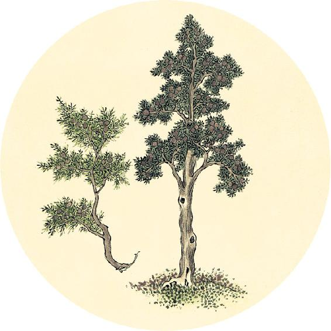
节气食方
糯米红豆饭（庚子岁配方）
原料：赤小豆100克，糯米50克，黍米50克，油、盐、紫苏子各少许。
做法：
1. 赤小豆加清水入锅，煮开后10分钟关火。
2. 在炒锅内多放油，烧热后放少许盐，放糯米和黍米用小火不停翻炒。
3. 炒到微微发黄，加入紫苏子略炒一下，把赤小豆连汤一起倒入，小火焖熟后起锅。
【释义】肝，是四肢的根本，是藏魂的地方，其荣华表现在爪甲，其充养的组织在筋，可以生养血气，其味为酸，其色为青，是阳中的少阳，与春季之气相通。
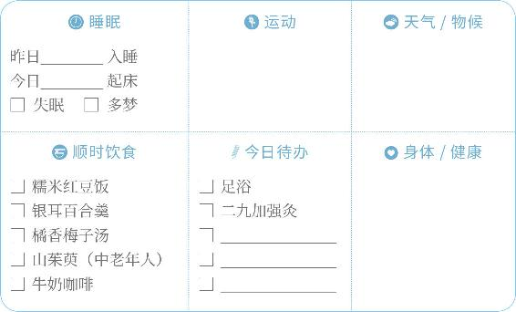
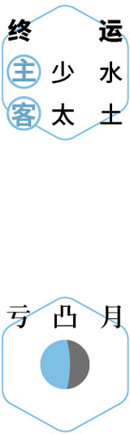
灸艾
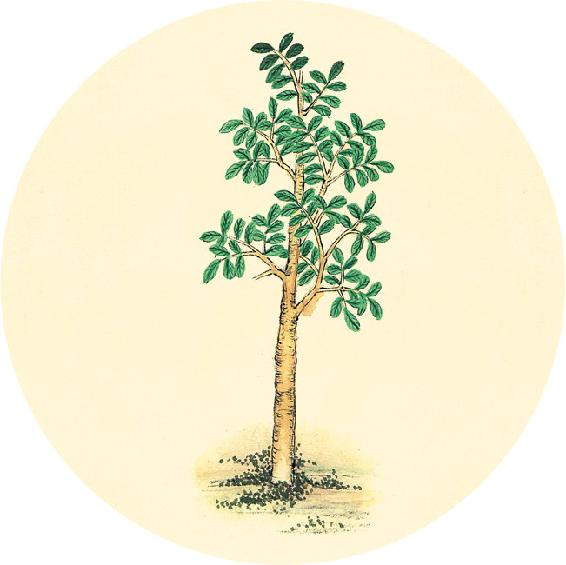
二十四节气茶养生
今年小寒节气品茶推荐：咖啡。
深冬时节，要谨防寒湿滞留在人体下半身。特别是今年这个月，人体的小腹部位更易有寒，用咖啡代替茶会比较好。茶偏凉，咖啡是温性的，还能燥湿。咖啡宜早上喝，若是喝了咖啡晚上睡不着，可以喝些桑叶茶。桑叶能抵消咖啡因的作用。
咖啡入门，可以从牛奶咖啡开始（做法见1月7日）。
脾者，仓廪之本，营之居也，其华在唇四白，其充在肌，其味甘，其色黄，此至阴之类，通于土气。
——黄帝内经·素问·六节脏象论
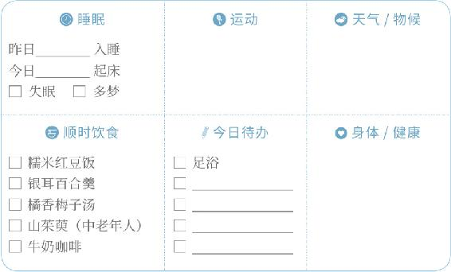
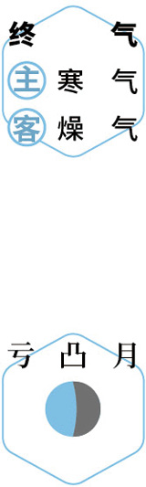
暖膝
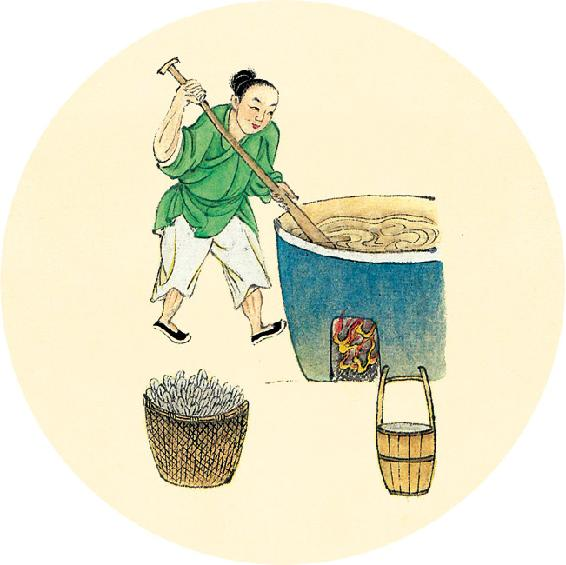
饴糖
二十四节气茶养生
今年小寒节气品茶推荐：咖啡。
牛奶营养丰富，但喝多了易生湿气，配上咖啡就好多了。
牛奶咖啡
原料：咖啡粉15克，开水250毫升，奶粉、红糖适量。
做法：用咖啡壶或手冲法冲泡咖啡，加入奶粉、红糖。
功效：早餐后饮用可助消化，振奋阳气。

【释义】脾，是贮藏营养的根本，是营气所生的地方，其荣华在嘴唇四周，其充养的组织在肌肉，其味为甘，其色为黄，属于阴中的至阴，与土气相通。
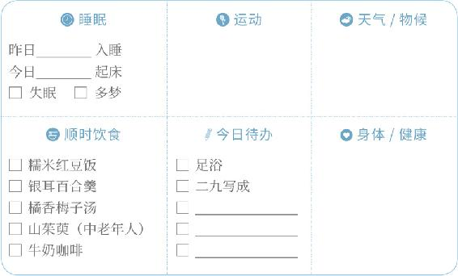
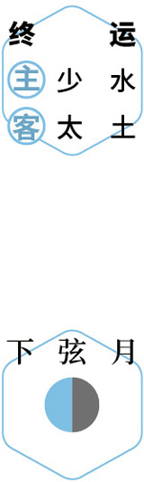
数九
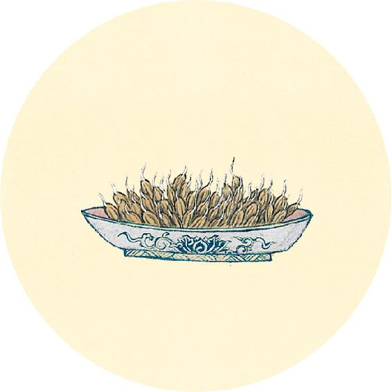
糵（niè）米
健康提示
小寒节气的养生功课：固肾、暖心、排下身寒湿。
今年小寒特殊的养生要点——
今年小寒，人体容易腹寒而肺有燥火，胃和皮肤也容易受损。雾霾多发时节，心肺功能差的人容易感觉不适，可以用中药贴内关穴和膻中穴来调理（配方见11月1日）。
保养重点：肺、胃、心。
容易出现的问题：皮肤问题、胃痛、咳嗽、心脏问题。
凡十一脏取决于胆也。
——黄帝内经·素问·六节脏象论
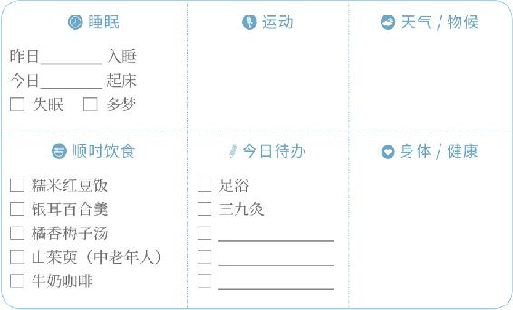
灸艾
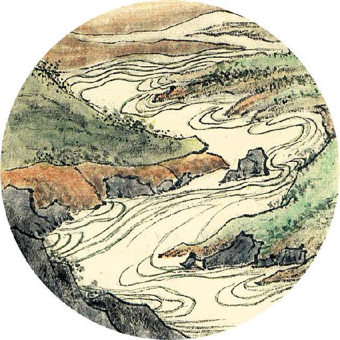
一候反思
现在已经是残冬，快到我们交四季养生作业的时候了。一年身体养得好不好，开春就见分晓。
冬季的进补食方（补心养阳汤、墨鱼汤、养藏汤、山茱萸）是否都顺时吃了？
若是没有吃到位，要抓紧这剩下的一个月，好好进补，静候春天。
特别推荐：2020年的墨鱼长势良好，滋补作用强，冬天晒的墨鱼干可以多吃一些。
【释义】人体十一个脏腑的功能的发挥，都取决于胆的功能是否正常。

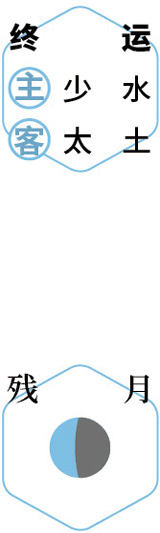
反思
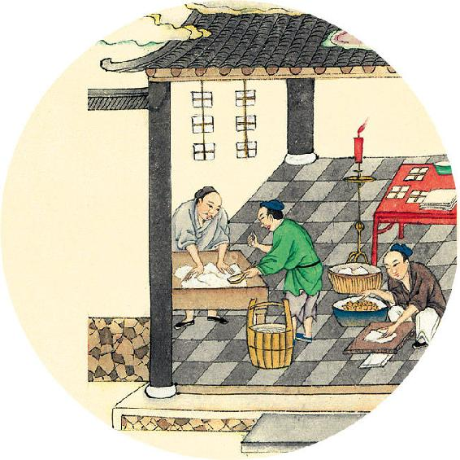
健康提示
从小寒开始，进入冬天的第三个月。
本月养生关键词：补肾气，排湿毒。
上半月重点：暖心，排寒湿。
下半月重点：暖脾，增强肝脏排毒功能。
今年深冬这一个月易有雾霾天气，要防范心脑血管病突发。
平时肝脏排毒功能差、皮肤敏感、胃虚、腹寒的人也要重点保养。
雾霾天气外出，给皮肤做好隔离防护，回家后立即清洁，涂抹保湿护肤品，防止皮肤过敏。
心之合脉也，其荣色也，其主肾也。
——黄帝内经·素问·五脏生成论
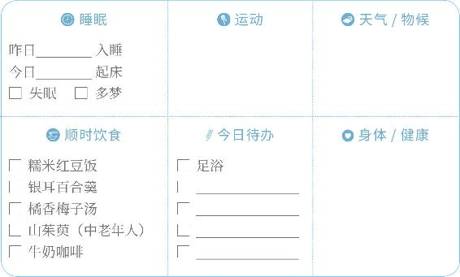
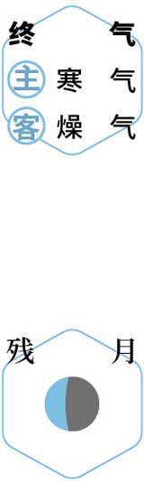
观鸟
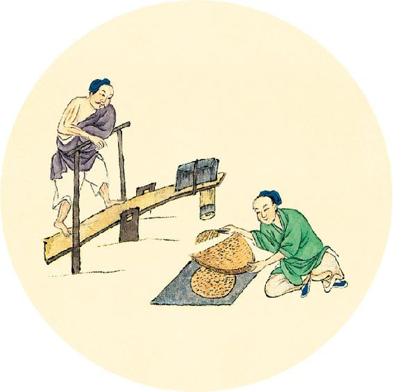
健康提示
这个时节是一年中心脑血管疾病的危险期，易发心脏病、脑卒中，今年尤其要注意。
平时工作劳累，脾气急躁，抽烟、喝酒，有血压高、血脂高、头晕、胸闷等各种情况的人，要重点防范。
饮食保健：玫瑰、月季、肉桂、陈皮等。
居家保健：佩戴中药香包、睡药枕、梳理头皮经络。
膏贴保健：用中药做成药泥，贴在胸口膻中穴、左手手腕内关穴（配方见11月1日）。
【释义】心，外合于脉，它的荣华表现于肤色，克制心的是肾。
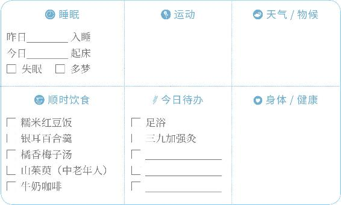
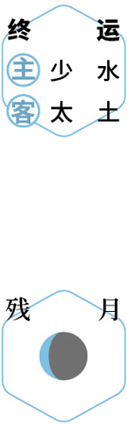
灸艾
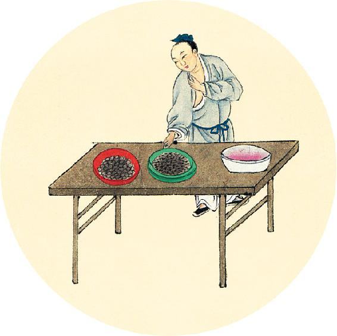
健康提示
传统中药有各种外治法，其中最简单易行的是香包，只需要挂起来或随身带着就可以持续生效。
古代医书和典籍多有记载，可用香包充养正气，抵抗病邪，芳香化浊，通经开窍，疗愈弱疾。
香包有各种配方，用于预防不同的疾病和调理身体。
可以回顾去年日历书中5种香包的配方，对照自制。
肺之合皮也，其荣毛也，其主心也。
——黄帝内经·素问·五脏生成论
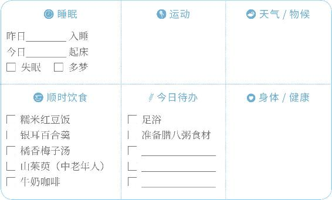
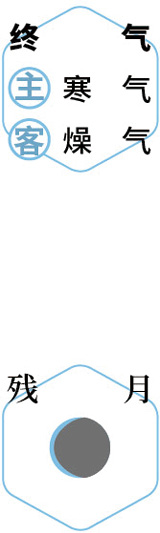
佩香囊
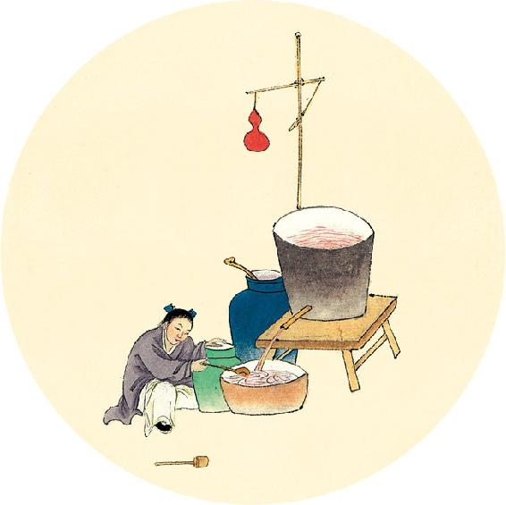
节日食方
今天进入腊月，这个月可以常喝腊八粥。
腊八粥（庚子岁推荐配方）
1.基础配方
稻类：糯米、粳米
豆类：赤小豆、豌豆
杂粮：黍米、小米
其他：茯苓、紫苏子
2.可加以下配料
干果：莲子、板栗、核桃
果蔬：银耳、红枣、桂圆肉
粥果（不煮，撒在粥上）：枸杞、樱桃干、桑椹干
以上配方，今年都可以经常吃，有助于健脾胃、补气血。
【释义】肺，外合于皮，它的荣华表现于毫毛，克制肺的是心。
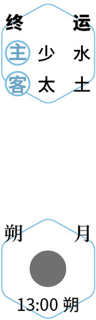
食粥
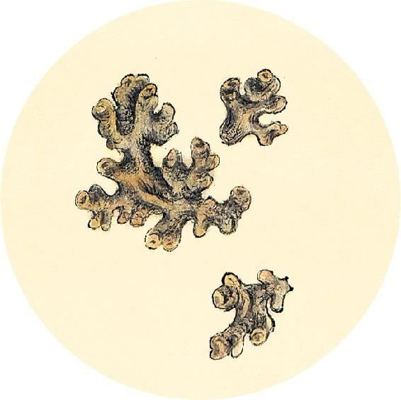
二候反思
这个冬天是否有以下现象：
肚子变胖 □ 是 □ 否
血脂增高 □ 是 □ 否
痰多夜咳 □ 是 □ 否
咽喉不适 □ 是 □ 否
皮肤过敏 □ 是 □ 否
任何一个答“是”，今年要多吃茯苓和莲子，常饮荷叶陈皮茶。
肝之合筋也，其荣爪也，其主肺也。
——黄帝内经·素问·五脏生成论
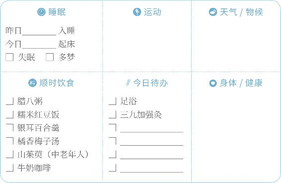
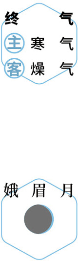
灸艾
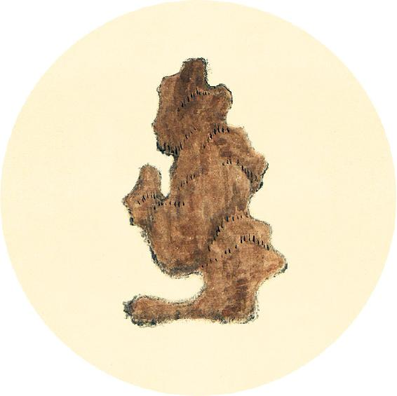
健康提示
按照历法，下个月才会进入农历新年（辛丑岁）。但是按照《黄帝内经》，庚子岁的岁运在大寒之前会“退位”，辛丑岁的岁运将在大寒节气当天“接任”。
因此，还有5天，传统民俗“本命年”就要更替了。属鼠的人，本命年在大寒之前结束；属牛的人从大寒节气起，进入本命年。
民间讲究的本命年饰物，到大寒就可以戴起来。
我们养生也将从大寒开始进入辛丑岁的第一个阶段（初气）。辛丑岁全年六阶段保健方目录在4月28日。
【释义】肝，外合于筋，它的荣华表现于爪甲，克制肝的是肺。
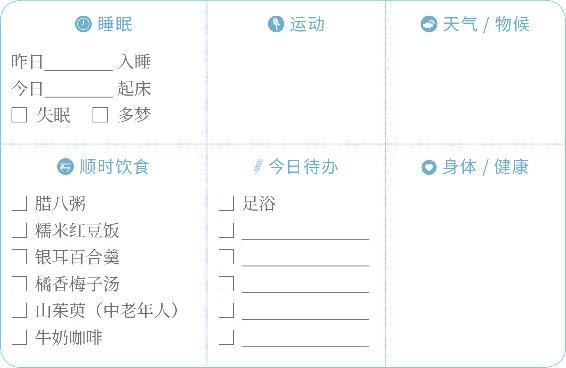
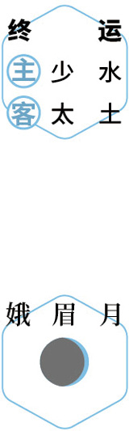
避寒
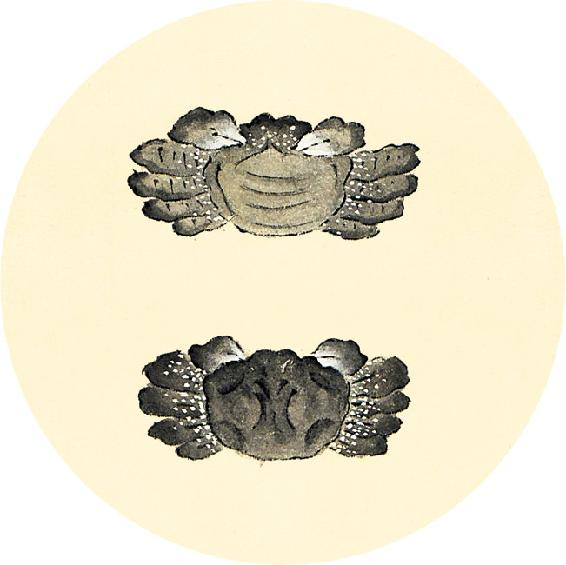
健康提示
庚子岁六气保健方：橘香梅子汤（小雪、大雪、冬至、小寒）
原料及在这道茶方中的功效：
1.川红橘或橙子2个，散风寒、抗病毒。
2. 罗汉果1个，清肺利咽、化痰止咳、三高保健，中和梅子酸味。
3.牛蒡20克，调理咽喉肿痛、化热痰。
4.枸杞1把（不限量），滋补肝肾、明目。
5. 甘草陈皮梅子汤1份（乌梅6个、大枣6个、山楂10克、甘草10克、川陈皮1/4到半个），调理气血、预防积食、降血脂。注意：孕妇喝不放山楂。
脾之合肉也，其荣唇也，其主肝也。
——黄帝内经·素问·五脏生成论
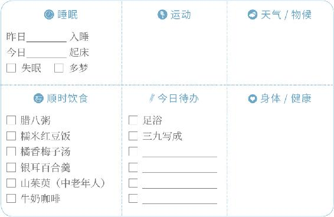
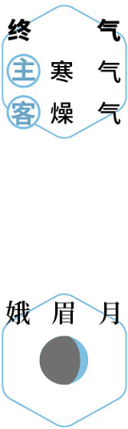
进补
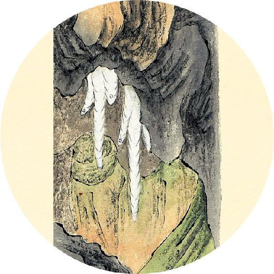
健康提示
橘香梅子汤（下）
加味：
1. 气虚、疲劳的人可加黄芪30克，固表，平时常喝可以增强对流感的抵抗力。
2. 学生可加玫瑰花20朵，缓解学习压力。
做法：罗汉果压破，与其他材料一起加水同煮40分钟，可煮三次。
功效：预防秋冬季感冒，排毒、降脂，调养气血。
注意：已经感冒咳嗽的人，去掉黄芪和甘草陈皮梅子汤，加入鱼腥草。
【释义】脾，外合于肉，它的荣华表现于口唇，克制脾的是肝。
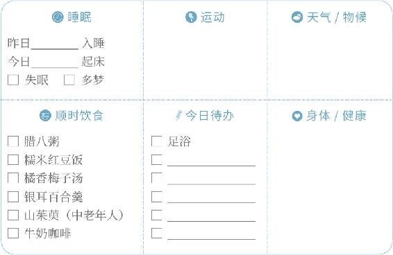
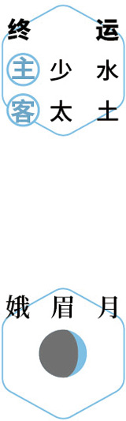
静养
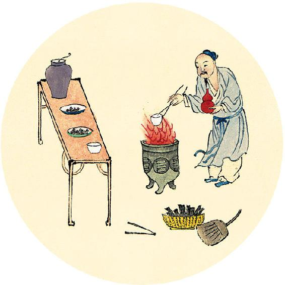
食材准备
后天进入大寒节气。
1.腊八粥
主要原料：糯米、粳米、小米、赤小豆、豌豆、黍米、茯苓、紫苏子。
2.补心养阳汤
原料：黄芪、当归、大枣、川陈皮、羊肉、甘蔗、带皮生姜。
3.银耳桂圆羹
原料：银耳、桂圆。
4.节气养生茶饮
原料：咖啡，可加牛奶、红糖。
5. 辛丑岁初气保健方：肉桂陈皮四物饮（做法见3月12日）
原料：肉桂、陈皮、柠檬、麦芽糖。
肾之合骨也，其荣发也，其主脾也。
——黄帝内经·素问·五脏生成论
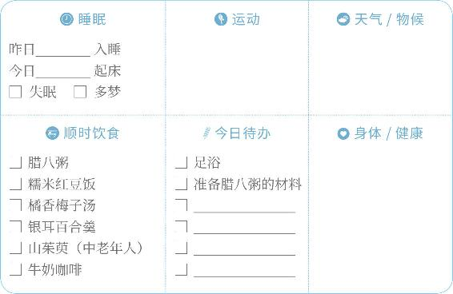
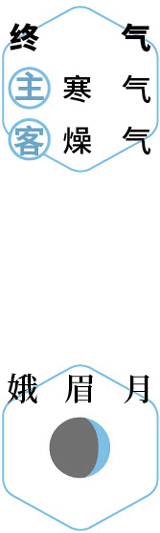
静养
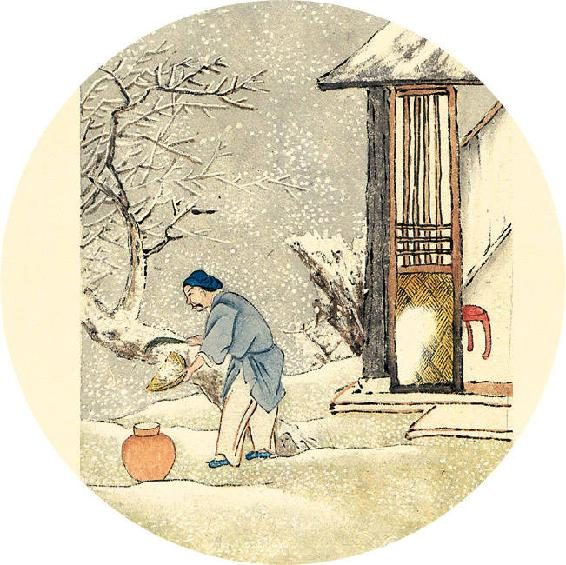
节气总结
喝腊八粥的次数_________
吃红豆饭的次数_________
喝银耳百合羹的次数_________
喝橘香梅子汤的次数_________
吃山茱萸的次数_________
泡脚的次数_________
身体哪些方面有改善__________________
辛丑岁的岁运“水”从大寒节气开始运行。按传统养生习惯，今天出生的孩子属鼠；明天起，今年出生的孩子属牛。
【释义】肾，外合于骨，它的荣华表现在头发，克制肾的是脾。
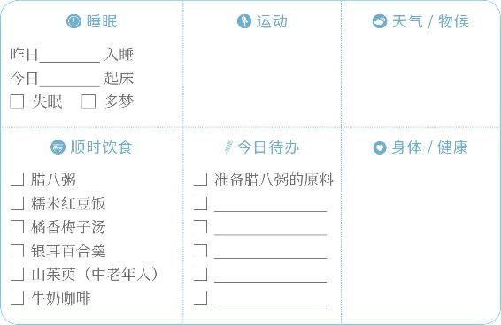
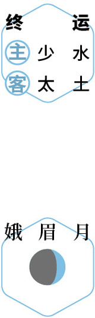
静养